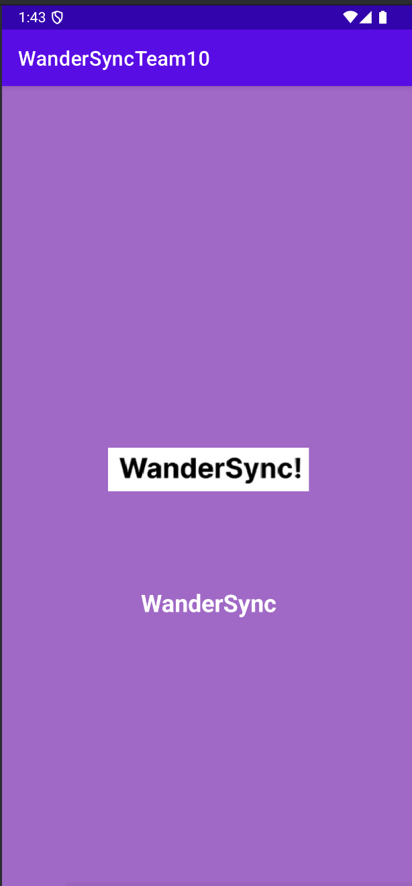
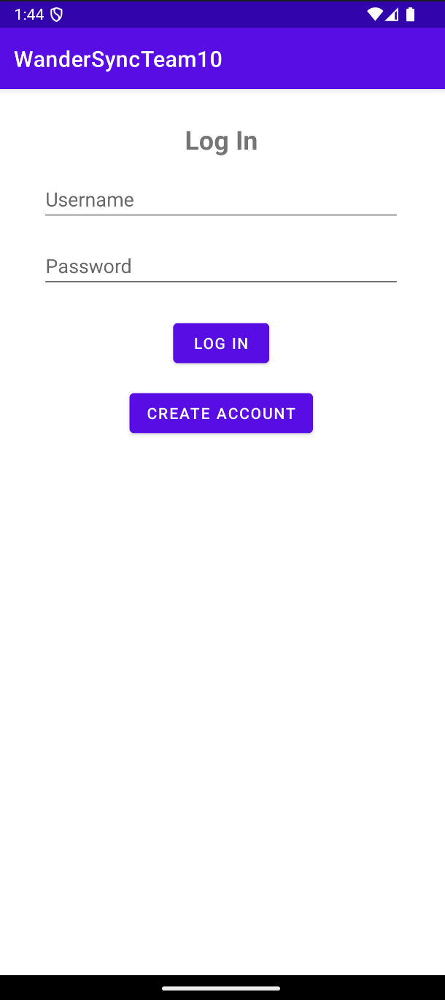
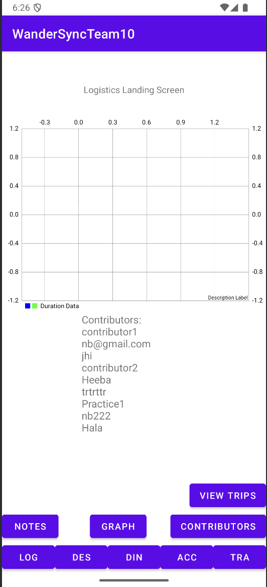
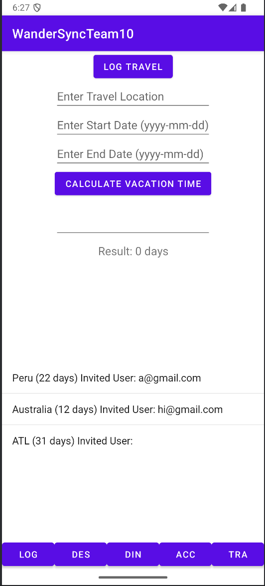
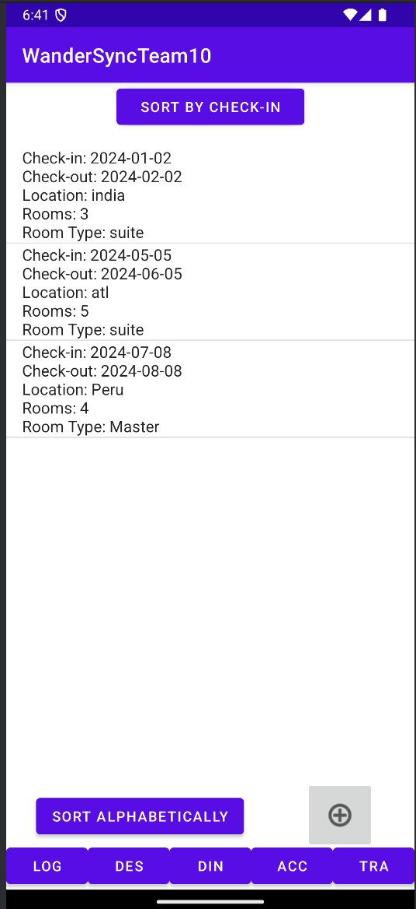

Introduction
This section provides a visual tour of WanderSync's app, highlighting its main functionalities and interaction flow.
Splash Page
The Splash Page is the first screen users see when launching the app:
Login Screen
The Login Screen allows users to securely access their accounts, all users are stored in Firebase.
Logistics Screen
The Logistics Screen helps users keep track of their travel plans and add notes:
Destination Screen
The Destination Screen displays details about selected travel destinations:
Accommodations Screen
The Accommodations Screen allows users to view and manage lodging details:
Travel Posts
The Travel Screen provides a way to log travel posts and show users an overview of all their previous travel posts:
The above screenshots illustrate the user-friendly interface of WanderSync, focusing on its key functionalities.